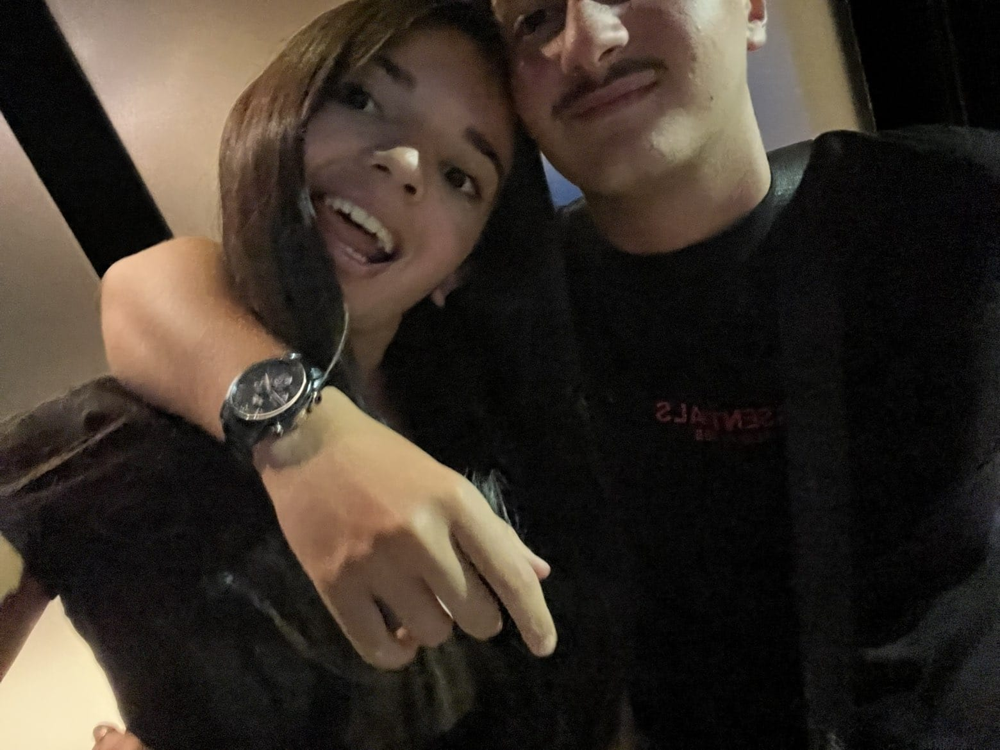

Le temps magnifique qu'on a partagé
Du 12 janvier 2025 à 4h au 15 octobre 2026 à 21h
Temps écoulé depuis...
Depuis le 15 octobre 2026 à 21h
Amel, j'ai toujours essayé de te montrer que je t'aimais plus que tout, mais j'ai toujours cru que ce n'était pas suffisant. Je ne sais pas quoi faire pour te prouver que je t'aime plus que n'importe qui, mais je vais essayer d'aligner des mots pour m'exprimer.
Depuis le premier jour où je t'ai connue, je t'aime. Toutes les personnes que j'ai croisées, je leur parlais sans réelle envie, sans raison particulière. Je n'ai jamais aimé quelqu'un. Mais avec toi, c'est différent. Dès le premier jour où je t'ai parlé, j'ai senti ta bienveillance. Je me sentais bien avec toi, même si tu me parlais simplement parce qu'on était dans le même groupe. J'ai adoré le fait que tu me parles. Je n'avais jamais ressenti cette sensation auparavant. Je ne t'avais jamais vue, jamais touchée, mais je savais déjà que je t'aimais.
Le temps a passé, on a commencé à se parler, et je ne me suis jamais senti aussi bien en parlant à quelqu'un. Chaque fois que je te parle, je ressens cette même sensation qu'au début. Et chaque seconde qui passe me rend encore plus fou amoureux de toi. Même en novembre, quand on ne se parlait pas, je t'aimais chaque jour un peu plus que la veille. C'est là que j'ai su que tu étais la seule et unique personne que je voudrais épouser.
Tu es la meilleure personne que j'aie jamais connue. Pour toi, je suis prêt à tout, wallah. Je suis prêt à mourir pour te faire sourire, wallah. Chaque fois que je te vois triste, ou que quelque chose te dérange, j'ai mal au cœur, wallah. Et quand on sera mariés, incha'Allah, tu dépendras de moi, tu seras sous ma responsabilité. Je te promets et je te jure que tu ne te sentiras jamais mal avec moi. Jamais triste, jamais abandonnée, jamais sans amour.
Je chercherai toujours à te prouver mon amour, même quand on aura 80 ans. Tu es la personne la plus incroyable que je connaisse, wallah. Tu t'inquiètes toujours pour moi, tu veux toujours savoir si je vais bien, si je suis fâché. Et même si parfois j'en fais trop, tu ne m'as jamais fait de mal. Ton amour est la chose la plus précieuse au monde, wallah. Je le protégerai toujours. Toi et ton amour, je vous traiterai toujours avec tendresse, et jamais je ne te ferai de mal.
Je déteste quand tu me dis que tu n'aimes pas tes oreilles, ton ventre ou n'importe quelle autre partie de ton corps. Parce que, wallah, je n'ai jamais posé mes yeux sur quelque chose d'aussi magnifique que toi. Et quand je te dis que tu es la plus belle femme du monde, ce n'est pas juste parce que je t'aime, je le pense vraiment. Si tu trouves des défauts à ton corps, sache que c'est dans ta tête, parce que tu es parfaite, mon petit bébé d'amour. Tu es la plus belle personne que j'aie jamais vue, wallah. La plus gentille, la plus bienveillante, la plus drôle, et la plus délicieuse 😉.
J'aimerais aussi te dire merci, Amel. Merci d'être là et d'avoir toujours était la pour moi. Grâce a toi, et pour toi, je suis devenu un homme meilleur. Tu as fais de moi quelqu'un de plus patient, plus mature, et surtout tu me donnes envie de me lever chaque matin pour réussir et faire de toi ma princesse.
Tu sais même pas à quel point ta présence me fait du bien. Des fois, je me demande comment j'ai eu autant de chance de t'avoir dans ma vie. Merci pour ton amour, ta patience, ta douceur. Merci de m'aimer malgré mes défauts. T'es vraiment la plus belle chose qui me soit arrivée, wallah.
Sache que tu es une personne en or, qui mérite tout l'or du monde. Pour ta gentillesse, ta bienveillance, parce que t'es drôle, attentionnée, intelligente. T'es belle à l'intérieur autant qu'à l'extérieur. Et surtout, je t'aime parce que tu es toi-même, et je ne pourrai jamais me fâcher contre toi ni vouloir arrêter de te parler, mon petit bébé d'amour. T'es mon rêve, mon bonheur, mon tout. Tu es la femme que j'ai toujours rêvé d'avoir, wallah.
Tu es et tu resteras toujours mon bébé. Et, wallah, pour rien au monde je ne te quitterai. Les prochaines semaines seront peut-être difficiles, mais sache que je suis et je resterai à tes côtés. Je ferai tout mon possible pour que tu sois la plus heureuse, que ce soit maintenant, l'année prochaine ou dans 10 ans.
J'espère que ce message te fera plaisir, que j'ai bien parlé, et surtout que tu comprendras à quel point je t'aime. Je ne te lâcherai jamais Amel. On finira notre vie ensemble mon bébé, et je ferai de toi ma princesse, incha'Allah.
Je t'aime, la femme de ma vie ❤️❤️